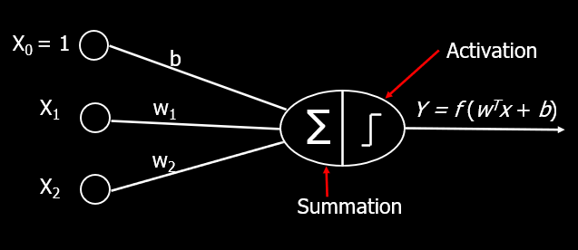
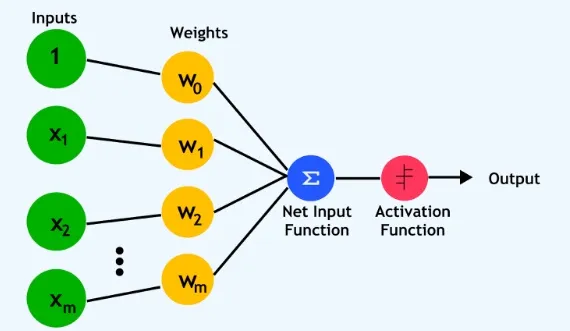
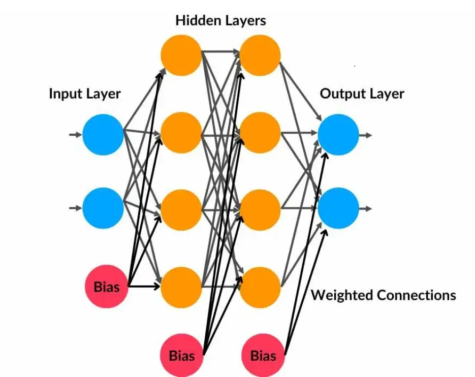
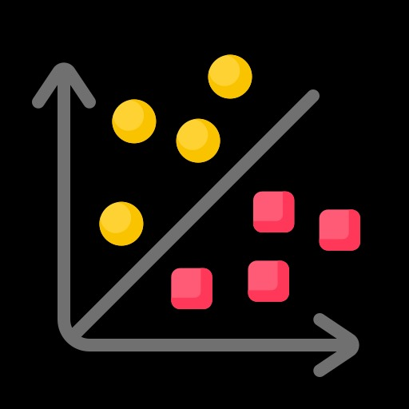
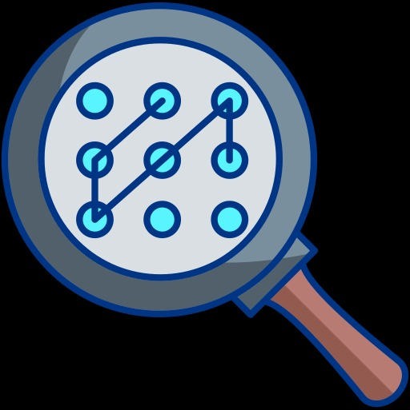

Welcome to Perceptron Learning
Welcome to our interactive learning platform dedicated to understanding perceptrons - the fundamental units of neural networks.
Learn
Explore perceptron concepts
Visualize
See perceptrons in Visualization
Data Handling
Explore perceptron while handling data
Code
See perceptrons in action
🤖 What is a Perceptron?
A perceptron is the simplest form of an artificial neural network — like a baby brain for computers! 🧠
It acts as a binary classifier, meaning it decides between two outcomes (YES/NO or 0/1). Here's how it works:
- 🔢 Takes multiple input values
- ⚖️ Multiplies each input by a weight
- ➕ Adds them all up (plus a bias)
- 🚦 Passes the sum through an activation function
- ✅ Outputs either a 0 or 1 based on result
While a single-layer perceptron handles basic tasks, modern networks use multi-layer perceptrons (MLPs) to handle complex data via:
- ✨ Hidden layers
- 📈 Backpropagation
- 🔁 Activation functions like ReLU, Sigmoid, or Tanh
📜 A Brief History of Perceptrons
- 🧠 1958: Frank Rosenblatt introduces the first perceptron model — inspired by real neurons!
- 🚀 1960s: Gained attention in AI research.
- 🛑 1970s: Found to be limited (e.g. XOR problem).
- 💡 1980s–90s: MLPs and backpropagation revived interest.
- 🤖 2010s: Deep learning exploded with CNNs and RNNs.
- 🌐 2020s: Perceptrons power chatbots, cars, robots.
- 🔮 2025: Integrated across medicine, art, and more.
🧠 How Does a Perceptron Work? (Step-by-Step)
🔹 Step 1: Inputs and Weights
Example Inputs: \( x_1 = 2, \quad x_2 = 3 \)
Weights: \( w_1 = 0.5, \quad w_2 = -0.4 \)
🔹 Step 2: Add Bias and Compute Weighted Sum
\[ z = w_1x_1 + w_2x_2 + b = (0.5 \cdot 2) + (-0.4 \cdot 3) + 0.2 = 0.0 \]
🔹 Step 3: Apply Activation Function
\[ f(z) = \begin{cases} 1 & \text{if } z \geq 0 \\ 0 & \text{if } z < 0 \end{cases} \Rightarrow f(0) = 1 \]
🔹 Step 4: Learning Rule
\[ w_{\text{new}} = w_{\text{old}} + \eta (y - \hat{y}) x \]
Example: If \( \hat{y} = 0 \), \( y = 1 \), \( \eta = 0.1 \), \( x = 2 \), \( w = 0.5 \):
\[ w_{\text{new}} = 0.5 + 0.1(1 - 0)(2) = 0.7 \]
🔹 Step 5: Use Modern Activation
Sigmoid: \[ f(z) = \frac{1}{1 + e^{-z}} \quad \text{(e.g., } f(0) = 0.5 \text{)} \]
Tanh: \[ f(z) = \tanh(z) \quad \text{(e.g., } \tanh(-1.55) \approx -0.91 \text{)} \]
📌 Summary Formula
\[ y = f(w_1x_1 + w_2x_2 + \dots + w_nx_n + b) \]

Perceptron Model: Inputs are weighted, summed, passed through an activation function, and output a decision.
🚧 Challenges of Perceptrons
While perceptrons are powerful in their simplicity, they face several key limitations:
Visualizing Limitations: Single-layer perceptrons can only separate linearly separable data.
- ❌ Can't solve non-linear problems (e.g., XOR problem).
- 🔁 Only binary classification — not ideal for multi-class tasks.
- 📊 Needs large training data to learn effectively.
- ⚠️ Overfitting/underfitting risks on small/large datasets.
- 🖼️ Poor feature extraction for images or speech.
- 🧠 Single-layer limitations prevent learning complex patterns.
- 📉 Linear boundaries only — can't model curves.
🔬 Advanced Perceptron Concepts
Perceptrons are now core to deep learning. Explore the key advancements below:
Used in MLPs to adjust weights by propagating errors backwards. It enables learning from mistakes.
Perceptrons are the building blocks of advanced architectures like CNNs and RNNs for vision, language, and more.
Dropout, L2 regularization and others prevent overfitting by improving generalization during training.
Modern functions like ReLU, Sigmoid, Tanh, Softmax provide non-linearity and better learning capacity.
Advanced optimizers like Adam, RMSprop, and AdaGrad improve convergence speed and accuracy.
Introduction to Perceptrons
The perceptron, introduced by Frank Rosenblatt in 1958, is one of the earliest artificial neural networks designed for binary classification tasks.
🧠 Types of Perceptrons

🔹 Single-Layer Perceptron
A basic perceptron with one layer. Can only solve linearly separable problems.
1. Input Layer: A single-layer perceptron consists of an input layer where each input is assigned a weight. A bias term is also included to shift the decision boundary.
2. Weighted Summation: The perceptron computes a weighted sum of all inputs, including the bias. This is mathematically represented as Σ(wᵢxᵢ) + b.
3. Activation Function: The weighted sum is passed through an activation function, typically a step function, which determines whether the perceptron fires (outputs 1) or not (outputs 0).
4. Learning Rule: The perceptron learns using the perceptron learning rule, which updates weights based on the error between predicted and actual output.
5. Binary Classification: A single-layer perceptron is mainly used for linearly separable binary classification problems, as it can only learn linear decision boundaries.
6. Limitation: It cannot solve non-linearly separable problems like XOR, which led to the development of multi-layer perceptrons with hidden layers.

🔸 Multi-Layer Perceptron (MLP)
Uses multiple hidden layers and non-linear activation functions to solve complex problems.
1. Definition: A Multiple Layer Perceptron (MLP) is a type of artificial neural network consisting of multiple layers of neurons, including input, hidden, and output layers.
2. Layers: MLP has at least one hidden layer between the input and output layers, allowing it to capture complex patterns in data.
3. Activation Function: Each neuron in the hidden and output layers applies an activation function (like ReLU, Sigmoid, or Tanh) to introduce non-linearity and enhance learning capabilities.
4. Weights and Bias: Each connection between neurons has an associated weight and bias, which are updated during training using optimization algorithms like Gradient Descent.
5. Backpropagation: MLP is trained using the backpropagation algorithm, which adjusts the weights based on the error calculated from the difference between predicted and actual outputs.
6. Applications: MLP is widely used in various fields, including image recognition, speech processing, financial forecasting, and medical diagnosis, due to its ability to learn complex relationships in data.
⚙️ How Does a Perceptron Work?
A perceptron is a simple model of a biological neuron. It consists of an input layer, weights, a bias term, an activation function (usually a step function), and an output layer...
📋 Steps of a Perceptron
A perceptron follows these steps:
- Step 1: Takes inputs (x1, x2, ..., xn) and assigns them weights (w1, w2, ..., wn).
- Step 2: Computes weighted sum: \( z = (w_1x_1 + w_2x_2 + ... + w_nx_n) + b \)
- Step 3: Applies an activation function (Step function, Sigmoid, ReLU, etc.).
- Step 4: If the output is incorrect, the weights are updated using the Perceptron Learning Rule:
- Step 5: Repeat steps 1–4 for each training example.
\[ w_{new} = w_{old} + \eta (y - \hat{y})x \]
📘 Perceptron Learning Rule
The perceptron learning rule is a supervised learning algorithm used to train perceptrons. It adjusts the weights based on the error between the predicted and actual output.
The weights are updated using the formula:
\( w_{new} = w_{old} + \eta (y - \hat{y})x \)
Where:
- \(\eta\) = learning rate
- \(w_{old}\) = old weight
- \(w_{new}\) = new weight
- \(y\) = actual output
- \(\hat{y}\) = predicted output
🌍 Real-World Applications of Perceptrons
Perceptrons form the foundation of modern neural networks, playing a crucial role in various fields:
- Binary Classification: Used in computer vision tasks to classify images.
- Basic Pattern Recognition: Used in text processing to classify patterns.
- Logic Gate Implementation
💡 Perceptron Formula:
𝑦 = 𝑓(𝑊𝑋 + 𝑏)
Where:
𝑊: Weight vector
𝑋: Input vector
𝑏: Bias
𝑓: Activation function (usually a step function for binary classification)
✅ AND Gate
| Input A | Input B | Output (A AND B) |
|---|---|---|
| 0 | 0 | 0 |
| 0 | 1 | 0 |
| 1 | 0 | 0 |
| 1 | 1 | 1 |
✅ OR Gate
| Input A | Input B | Output (A OR B) |
|---|---|---|
| 0 | 0 | 0 |
| 0 | 1 | 1 |
| 1 | 0 | 1 |
| 1 | 1 | 1 |
✅ NAND Gate
| Input A | Input B | Output (A NAND B) |
|---|---|---|
| 0 | 0 | 1 |
| 0 | 1 | 1 |
| 1 | 0 | 1 |
| 1 | 1 | 0 |
❌ XOR Gate
| Input A | Input B | Output (A XOR B) |
|---|---|---|
| 0 | 0 | 0 |
| 0 | 1 | 1 |
| 1 | 0 | 1 |
| 1 | 1 | 0 |
The XOR function is not linearly separable. A single-layer perceptron cannot implement it.
🔍 Examples of Perceptron Applications

✏️ Binary Classification
Used in postal systems and bank check scanning to identify handwritten numbers.

📬 Basic Pattern Recognition
Classifies emails as spam or not spam based on keywords and patterns.
🎯 Interactive Perceptron Quiz
Click your answers. They’ll lock in with color feedback. Gamified learning in action!
📊 Decision Boundary Visualization
Watch a perceptron learn to separate linearly separable data:
🔌 AND-Gate Simulator
Train a perceptron to model logical AND gate behavior.
🚫 It Gets Stuck on Non-Linearly Separable Data
Observe a perceptron's limitation when faced with XOR-like datasets.
🔧 Implementing Perceptron on Complex Data
Visualize how we can tweak the network to handle complex cases.
💡 Another Way to Solve Non-Linearly Separable Problems
Explore an alternative method to tackle XOR-style data.